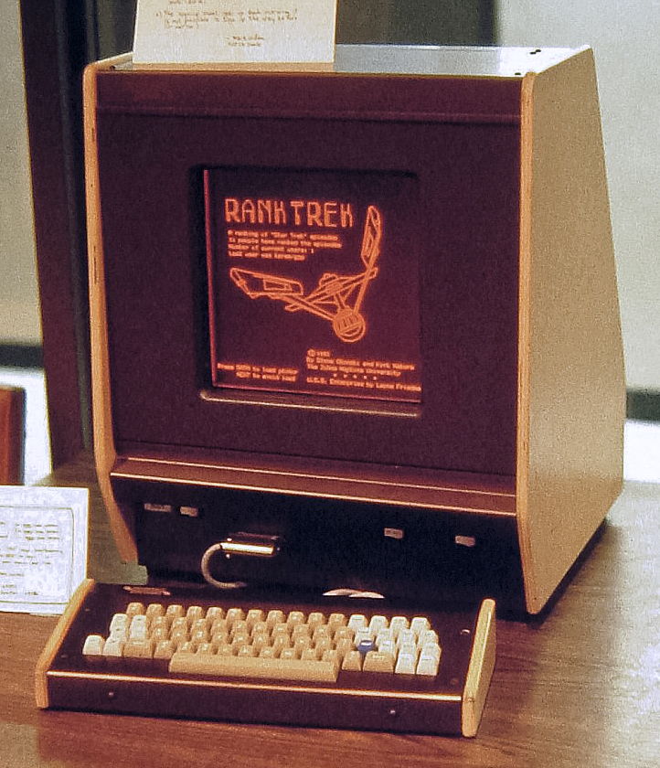

Min-Craft OWLBAT Edition
PLATO & OWLBAT
Before the internet, before personal computers, before Pac-Man, before Atari... there was the PLATO system.
 The Programmed Logic for Automatic Teaching Operations system was a state-of-the-art terminal system created in the 1960s, that gained popularity in the 1970s. It featured a 512 x 512 monochromatic plasma display, touchscreen sensor, keyboard, and was networked via a mainframe. Although primarily intended for education, it was nonetheless the birthplace of some of the first computer games ever - including the first CRPG "dnd", and the first multiplayer games.
The OWLBAT (Open Web Linked Browser-based Anachronistic Terminal) is a retro "fantasy console" (in the vein of PICO-8) that attempts to recreate the PLATO system experience (circa PLATO IV-V) in a web browser. Keyboard input is sent to a "sever", which responds with a list of basic commands (inspired by PLATO's TUTOR language and the PLATO specs) which determine what gets displayed on the terminal screen.
Min-Craft 1975
Min-craft is inspired by Notch's Minicraft (Ludum Dare 22) and is an answer to the question: "What if Minecraft had been envisioned in 1975?"
Instructions
Click the screen to allow keyboard input
W, A, S, D for movement
Z or I for inventory
C for crafting
E or Space for actions in the world (chop, mine, build)
E or Space for menu selections
1-4 to equip top items
T to toss your equipped item on the ground
` (backtick) to exit
Note: Your game is not saved when your browser leaves the page.
Thanks to cyber1.org for providing a PLATO terminal experience, int10h.org for the font, and playminicraft.com for keeping Minicraft alive.
Interested in making a PLATO-themed game with OWLBAT? Check out the GitHub repo (fork it, add an issue, etc.), or contact me on Twitter.